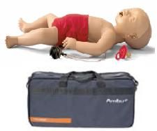
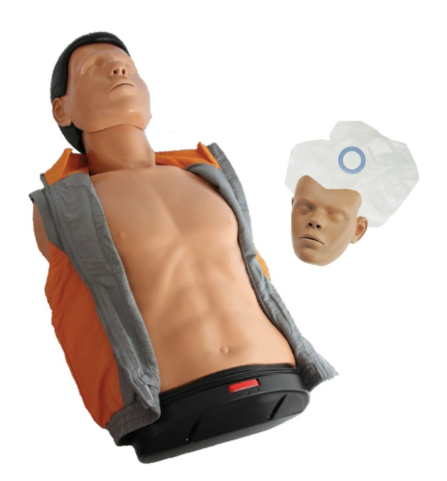

    <main role="main">

      <div id="myCarousel" class="carousel slide" data-ride="carousel" >
        <ol class="carousel-indicators">
          <li data-target="#myCarousel" data-slide-to="0" class="active"></li>
          <li data-target="#myCarousel" data-slide-to="1"></li>
          <li data-target="#myCarousel" data-slide-to="2"></li>
        </ol>
        <div class="carousel-inner">
          <div class="carousel-item active">
            
            <a  [routerLink]="['/item/prod-1']" >
              <div class="container">
                <div class="carousel-caption text-left">
                  
                  <h1>Collar Cervical</h1>
                  <p>Collar cervical rígido Mini Perfit Ace, de una sola pieza, ajustable en 12 graduaciones o posiciones precisas. 2 Modelos (Neonatal/Pediátrico, niño)</p>
                  
                </div>
              </div>
            </a>
            
          </div>
          <div class="carousel-item">
            
            <a  [routerLink]="['/item/prod-2']" >
              <div class="container">
                <div class="carousel-caption">
                  <h1>Manique Ambu BABY</h1>
                  <p>Ambu Baby  para  RCP  simulador bebé, tamaño real de un niño de 1 año de edad. Práctica de técnica de BLS (Apoyo vital básico) este maniquí entrega verificación de correcta simulación en RCP.</p>
                  
                </div>
              </div>
            </a>
            
          </div>
          <div class="carousel-item">
            
            <a [routerLink]="['/item/prod-3']" >
              <div class="container">
                <div class="carousel-caption text-right">
                  <h1>Manique Ambu MAN BASICO</h1>
                  <p>Maniquí Ambu MAN tiene un diseño de torso cerrado para formación académica,  proporciona una percepción muy real de la ventilación.</p>
                  
                </div>
              </div>
            </a>
            
          </div>
        </div>
        <a class="carousel-control-prev" href="#myCarousel" role="button" data-slide="prev">
          <span class="carousel-control-prev-icon" aria-hidden="true"></span>
          <span class="sr-only">Previous</span>
        </a>
        <a class="carousel-control-next" href="#myCarousel" role="button" data-slide="next">
          <span class="carousel-control-next-icon" aria-hidden="true"></span>
          <span class="sr-only">Next</span>
        </a>
      </div>


    
    </main>

